Five labels,
one authority.
Every rule on this page and in design.md carries one of five labels. The label says where a rule came from and how much it binds. Production always wins over any description of it.
| Label | Meaning |
|---|---|
| Established system rule | Directly present in the finished website — CSS, markup, assets, copy or script. Follow it. |
| Derived principle | Not written down on the site, but consistently demonstrated by it. Follow it unless production contradicts it. |
| Implementation detail | How the website happens to build the rule. Useful for engineers; not a brand law. |
| New recommendation | Proposed for the first time here, for something the website never needed. Adopt deliberately. |
| Not yet defined | The website gives no answer. Decide, then record; never invent silently. |
- 01One dominant object per composition. Everything else is small, precise and secondary.
- 02Two voices, never blended. Switzer speaks; Fragment Mono annotates.
- 03When uncertain, reduce. Remove before you add.
What Vagora is,
and only that.
The product noun is the Vagora Mirror. The software is the console. A retailer's mirrors are the estate. The site evidences ten capabilities and no others; nothing may be added to the list without evidence.
- 01Live 3D try-on — the garment rendered on the customer, tracking their movement in real time.
- 02The whole catalogue — every size and colourway, checked against live stock before it is shown.
- 03The whole look — pieces combined on the customer before anything is fetched.
- 04Made-to-order — unstitched cloth and made-to-order garments rendered before production begins.
- 05Campaign scenes — the customer placed inside scenes built around the collection.
- 06Their picks at the till — one scan sends selected garments, colourways and sizes to phone and counter.
- 07Retail intelligence — what customers browsed, tried, combined, saved and ignored, by store and garment.
- 08One console — catalogue, content and configuration across every store; sync status and offline alerts.
- 09Privacy — camera active only during a session; nothing stored; no account, registration or face database.
- 10Hardware — freestanding; starts by itself; 49-inch portrait display readable from a natural standing distance.
Precise, calm, editorial, retail-literate, quietly confident. Vagora describes what happens rather than what it means. It does not sell; it shows and explains. Three tones are always present at once — remove any one and it stops being Vagora:
- FFashion — large Switzer, generous whitespace, full-bleed photography with strong colour from garments. Without it: SaaS.
- RRetail — till, catalogue, colourway, garment, rail, stock; the constant return to the floor and the counter. Without it: an art project.
- SSystem — Fragment Mono notation, numbered sequences, hairlines, the console object. Without it: a lookbook.
Act one · On the floor → The Vagora Mirror → Act two · In the business → The console → Before you commit → See it in your store. Every piece of communication should be locatable on that spine.
“We have no benchmark to compare you against yet, and will not invent one.” “Sample data, not a live estate.” Where evidence is missing, the copy says so.
Four logo versions, each supplied for a light and a dark surface. Nothing else is a Vagora logo: if a version is not in assets/brand/logo/ it has not been approved, and it is not to be drawn, recoloured, outlined or assembled from parts. -on-dark and -on-light name the surface the artwork is for, not the colour of the artwork.
This order decides which version is used, every time. When anyone — designer or AI — is unsure which full logo to use, the answer is the vertical lockup.
Vertical lockup
The default full logo. Use it wherever there is enough vertical space: brand presentations, marketing collateral, social graphics, campaign materials, title and closing compositions, print, event materials, general brand identification.
White artwork · dark surface · 272 × 308
#0F0F0F artwork · light surface · 272 × 308
Horizontal lockup
Use only when vertical space is genuinely constrained. Shallow headers, narrow horizontal strips, landscape areas with limited height, compact navigation and header applications. Not because it fits more conveniently — the vertical lockup remains preferred.
White artwork · dark surface · 450 × 186
#0F0F0F artwork · light surface · 450 × 186
The mark alone
Favicons, app icons, avatars and compact identity. Use it when a full lockup would be inappropriate or illegible: small square or circular identity areas, compact product and interface identity, very small branded controls. It is not the default stand-in for the full logo in an ordinary marketing layout.
White artwork · dark surface · 124 × 240
#0F0F0F artwork · light surface · 124 × 240
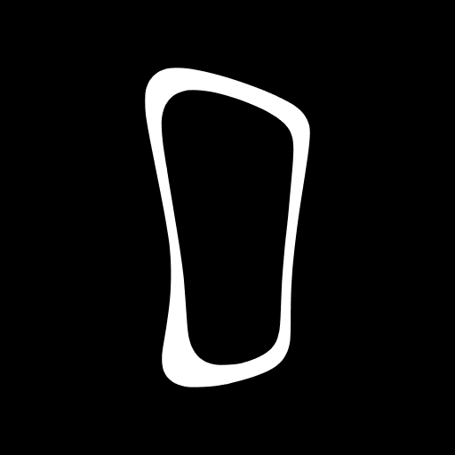
The mark on a black tile · 512 × 512 · favicon and profile
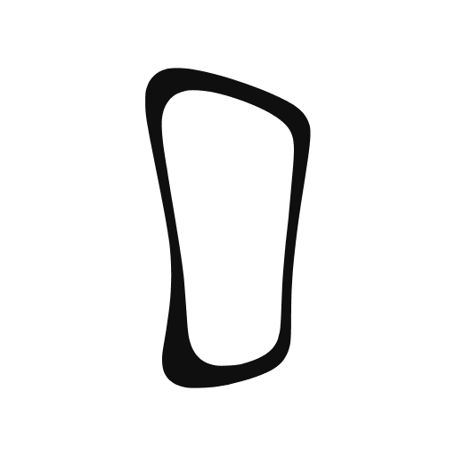
The mark on a white tile · 512 × 512 · favicon and profile
Wordmark
Rare display use, never routine identification. A large website footer or end composition, an editorial brand moment, an oversized campaign treatment, a selected presentation title or closing moment, a large-format composition where it is a dominant typographic object. Its rarity is part of its impact — do not repeat it across a piece.
White artwork · dark surface · 450 × 127
#0F0F0F artwork · light surface · 450 × 127
Light surface → the -on-light artwork (#0F0F0F). Dark surface → the -on-dark artwork (white). Every version exists in both, so there is always a correct file: choose the right asset instead of recolouring one, and never add an outline, glow, shadow or plate to make the wrong one work. On a photograph, place a logo only where §04's four conditions hold, and use the version that keeps its contrast there.
Choose logo variants by hierarchy, not convenience. Default VERTICAL LOCKUP Vertical height constrained HORIZONTAL LOCKUP Icon-scale / avatar-scale BRANDMARK The logo as a rare dominant editorial object WORDMARK
A slide deck, a social post, a billboard, a brochure, a landing page, an event graphic all take the vertical lockup unless the composition gives a specific reason to move down the list. One logo per composition, once. Then match the surface.
The website uses three of the eight, each correct by the hierarchy. The brandmark in the dock at 17 × 33px (11 × 21px under 460px) and in the preloader at 42–50px wide — compact interface identity, painted with currentColor through a CSS mask. The wordmark-on-dark closing the footer at 100% of the content width on black, left-aligned, as the page's last dominant object — the display use. The avatar marks as the favicons, light or dark by colour scheme. No lockup appears on the site, because the site has no composition that identifies the brand with a full logo. Two logo versions never appear in one composition.
| File in assets/brand/logo/ | Version · surface |
|---|---|
| vagora-lockup-vertical-on-dark.svg | Primary · dark |
| vagora-lockup-vertical-on-light.svg | Primary · light |
| vagora-lockup-horizontal-on-dark.svg | Secondary · dark |
| vagora-lockup-horizontal-on-light.svg | Secondary · light |
| vagora-brandmark-on-dark.svg | Brandmark · dark |
| vagora-brandmark-on-light.svg | Brandmark · light |
| vagora-wordmark-on-dark.svg | Display · dark |
| vagora-wordmark-on-light.svg | Display · light |
The four on the left are the system working. The four on the right are the supplied artwork misused — shown here only so the mistake is recognisable; the files themselves are never altered.
-on-light file, never an outline or a plate to rescue it.Measured from the piece itself so it scales with it. Nothing enters it — type, hairlines, the frame's edge, a retailer's logo. These numbers are proposed, not approved: the supplied artwork carries no clear-space specification.
The logo lives in a margin, aligned to the grid's edge, once per surface — found, not featured. The wordmark, when used, is a dominant object: low and left as in the footer, or centred only in the one centred composition.
Clear space and minimum sizes (recommended above, awaiting approval); the logo in motion beyond the dock's −24° hover tilt and the preloader's fade; a one-colour print build of the avatar tiles; retailer co-branding lock-ups.
Shown at actual size on this page. Below a lockup's minimum, move down the hierarchy to the brandmark rather than shrinking the lockup. Print: brandmark 6mm tall, vertical lockup 22mm wide, horizontal lockup 30mm wide, wordmark 30mm wide.
Macro tension,
micro discipline.
Twelve principles, each demonstrated by the site, ordered by how often they decide a composition. Each is stated in design.md as what / why / how / avoid.
1 · Macro tension, micro discipline. Something very large, answered by something small and exact. Derived
2 · One dominant object. Film, proposition, plane, product, console, photograph, display line or wordmark — one per section. Established
3 · Big object + small object. One precise answer, not several — an annotation, a rail, an intro, a colophon. Derived
4 · Negative space is active. The annotation is centred in the whitespace between the gutter and the image — the whitespace is a real layout box. Established
5 · Typography is compositional. Authored two-line breaks, tight measures, large scale contrast — a heading is a shape. Established
6 · Editorial asymmetry. Pick a side. Act one runs the plane to the right edge, Act two to the left. Centred only for the ask. Established
7 · Optical alignment. Eyebrow-to-heading distance is corrected per tier so the seen gap is equal at 48px and 160px. Established
8 · Consistency is not sameness. The same annotation component eight times, mirrored; the same heading animation everywhere. Vary content and side, never the component. Established
9 · Proximity. Gaps inside a group are smaller than the gap to anything outside it. Established
10 · Repetition builds the system. Numbered sequences, eyebrows, hairlines and the 300ms state change recur in every chapter; the grammar is learned once. Derived
11 · Hairlines are structural. A rule marks a real boundary — a fact, a rail, an answer, a metric — never decoration. Established
12 · Never from grey. Secondary colour is for ledes, facts and answers; muted and notation for mono only. Established
Two surfaces.
No third ground.
White and pure black are the only surfaces. Ink #0F0F0F is a text and control colour and is never a background. Every other tone is an alpha of ink or of white. Colour enters through garments in photographs, never through the interface.
#0F7A52 / #8A5A00 / #C0342E on their tints #EAF5F0 / #F7F0E2 / #FAECEB. Functional colour for system state inside a console representation. Never accents, never in marketing layouts, never a “brand green”.
Buttons: ink on white; inverted to white on black surfaces; hover 86%. Focus: 2px ink ring, 4px offset. One blurred control chrome, worn by both controls: 88% ink with a 20px backdrop blur and a white glyph or label. The dock is that, locked dark on every surface; the hero film toggle is the same value, so the page's only two pieces of chrome read as one family. Both are control chrome only — never a content or annotation surface (§04). Two shadows exist (a 5% lift and the dock's float); nothing else on the site casts one.
Coral, cobalt, magenta, yellow, green and white arrive through garments. The lime-green props recurring in the store photography are set dressing, not a brand colour, and must not be lifted into UI.
Two voices,
never blended.
Switzer is the editorial voice: everything Vagora says and everything a person can act on. Fragment Mono is the notation voice: the system naming, indexing and recording. It is not “the small font” — it is a different speaker.
Switzer
Variable, 100–900 available; the site uses 400 for body, 500 for headings and medium on white, 450 on black (white blooms). Nothing is bold. Negative tracking and tight leading tighten with size.
- Headings, propositions, feature titles
- Body, ledes, answers, facts, notes
- Buttons, links, the dock
- Scale creates authority; weight is refinement
Fragment Mono
Regular only. One size (14px), one weight (400), one tracking (0.02em), one line-height (1.25), one colour per surface (55% ink · 52% white). Uppercase where it labels; sentence-case in parentheses where it indexes.
- Eyebrows: VAGORA IS · ACT ONE · ON THE FLOOR · THE CONSOLE
- Indexes: (01) · 01 · 3ch columns
- RETAIL IMPACT · ESTATE OVERVIEW · ILLUSTRATIVE · SAMPLE DATA
- Never headings, buttons, body, bold, brackets-as-ornament, fake code
Fluid clamps. The brief's “84 / 64 / 48 / 22 / 17 / 14” is the maximum of lead / chapter / section / body / small / label; display (160) sits above them and is used once.
See it in your store.
An interactive mirror that helps customers discover more.
What happens
on the floor.
An interactive mirror that starts by itself.
The garment, rendered on the customer in live 3D.
Five things your customers can do with Vagora that aren’t possible anywhere else on your floor.
It tracks the customer’s movement in real time, so the garment responds as they move.
ACT ONE · ON THE FLOOR(01)RETAIL IMPACTESTATE OVERVIEW
Headings balance, with breaks authored by <br> where they matter. Prose pretty. Numbers tabular. Measures: reading 42rem · copy 30rem · annotation 34ch (280–320px wide) · manifesto 24ch · Mirror heading 21ch, lede 40ch · ask 10ch.
One site-wide gap (24px) corrected per tier — display lifts by 0.09em − 5px, lead 0.05em − 1.4px, chapter 0.045em − 1.2px — so the seen gap is equal at every scale. Sections never set their own.
The dock's type (15→16 at 500), the console's metric numerals (40→64, −.035em), the preloader tagline (sized to the viewport) and the footer wordmark (an SVG). Not templates; do not derive tiers from them.
Italic (Switzer Italic is loaded, never used). Non-Latin type (Fragment Mono ships as a Latin subset). Where Switzer might ever go below 16px.
The website keeps type beside its photographs, not on them — its choice, not a law. Type may sit directly on a photograph when all four hold: genuine negative space (a wall, a floor, sky — not the subject); dependable contrast from the picture itself, with no scrim; nothing that matters covered — never the customer, the garment, the Mirror, its screen or UI, staff; and integration with the composition, aligned to the picture's own edges and axes. When any fails, use A · image + solid field (a white or black margin beside or below the image carrying the type) or B · image + editorial annotation plate (solid white or black, compact, zero radius, no blur, translucency, gradient or shadow, attached to an edge or axis, sized to its content). Do not: glassmorphism, translucent panels, backdrop blur behind content, scrims, smoked overlays, gradients under text, rounded floating cards. Blur exists only in the dock and the film toggle, which are locked controls, never content surfaces. Specimens in §15.2.
No grid.
One gutter.
There is no global max-width and no column grid. The page is the viewport with one gutter; copy is bounded by measure; art-directed media runs to the viewport edge. Two local stages (1680px, 1440px) keep compositions together on very wide monitors.
Inside a block 8 / 12 / 16 / 24. Between blocks 48 / 64 / 96. Between chapters the three section rhythms: sm clamp(72px, 7vw, 112px) · md clamp(96px, 9vw, 152px) · lg clamp(120px, 11vw, 192px). Feature steps sit clamp(96px, 12vw, 160px) apart.
One left axis per block. Rows align on the baseline (align-items: end). Numbers align on tabular figures. Nothing is centred except the ask.
Act one. Media plane to the right viewport edge, sticky at viewport centre; annotation centred in the whitespace left of it, text left-aligned; inactive steps at 35%.
Act two. The same machine with the plane to the left edge and the rail on the right. The chapter opening stays label-left, statement-right.
The Vagora Mirror. Black. Product field 4:5 at ≈80svh, environment masked into the surface; eyebrow, 21ch heading and 40ch lede right; four-territory specification rail beneath.
The console. Intro column at a fixed measure; one bordered object taking everything that is left; the two vertically levelled.
Before you commit. Sticky head left; numbered hairline answers right, all open. No accordion.
See it in your store. Black, full height, centred: eyebrow, display title at 10ch, one button, the printed address, one note.
Fluid, not stepped.
Height matters.
Type, gutters, rhythm and media are clamp() functions of the viewport. Breakpoints exist only where a layout must change. Narrow layouts are complete, not reduced — the dominant object stays dominant, re-stacked in reading order.
| 460 | Dock brand cell steps down |
| 640 | Media 4/5 → 4/3; console metrics 2-up |
| 700 | Manifesto facts and specification rail 1 → 2 columns |
| 900 | Media → 16/10; FAQ two columns; chapter openings one row |
| 1024 | Console one row |
| 1100 × 600h | The sticky feature system exists (width and height) |
| 1200 | Mirror chapter wide layout |
| 1280 | Specification rail four columns |
- 01Height sensitivity. Media heights are svh-based; the sticky stage needs ≥600px tall; 1200×720 and 1366×768 must show the held Act one composition whole. svh everywhere, never vh.
- 02Differential scaling. 1440 → 2560: the stage grows fastest, headings moderately, body barely. A big monitor gets a bigger picture and more air, not bigger paragraphs.
- 03Narrow is complete. Each feature becomes one in-flow scene: image (4/5 → 4/3 → 16/10), index, title, body, RETAIL IMPACT. The image opens from its centre as it enters. Nothing a reader needs is hidden.
- 04QA viewports. 360×800 · 390×844 · 768×1024 · 1200×720 · 1366×768 · 1440×900 · 1920×1080 · 2560×1440. No overflow, no clipped glyphs, every reveal fires, the dock never covers a control at rest.
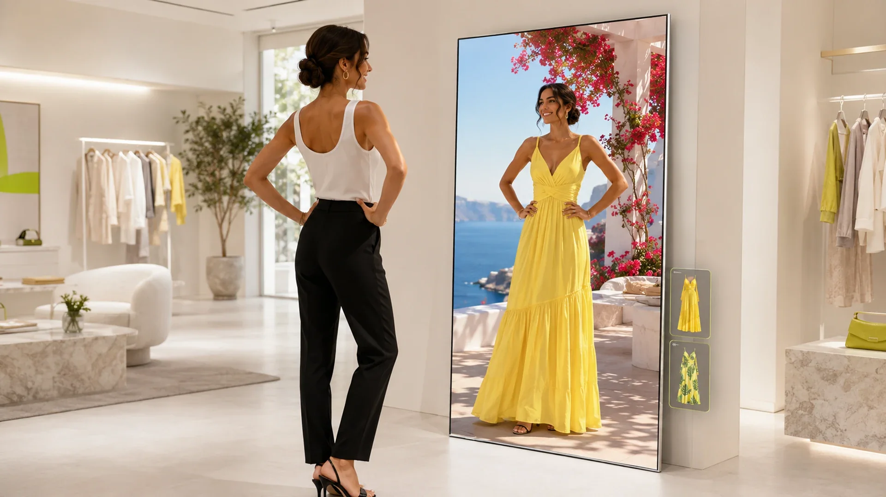
The Mirror is in
the picture.
Half of the brand. The subject is always a customer in front of the Vagora Mirror, the Mirror alone, a moment of service around it, or a business surface. Bright stores, daylight, one person at a natural distance, colour from the garments, photographic realism.
The hero film shown here is Vagora's main film. The live site is running a provisional replacement while that film is being finished, so its hero differs from this frame; everything else on this page matches production.
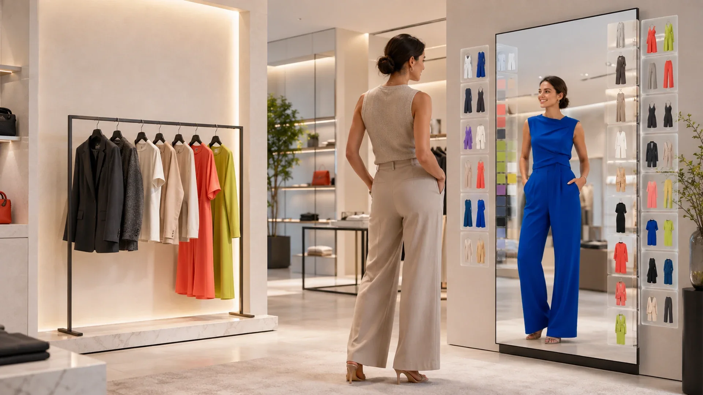
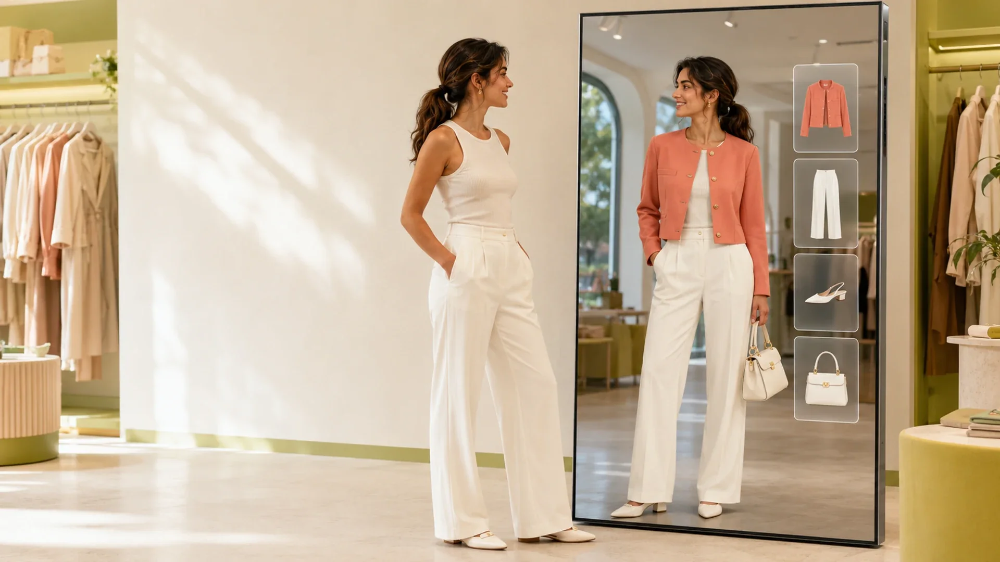
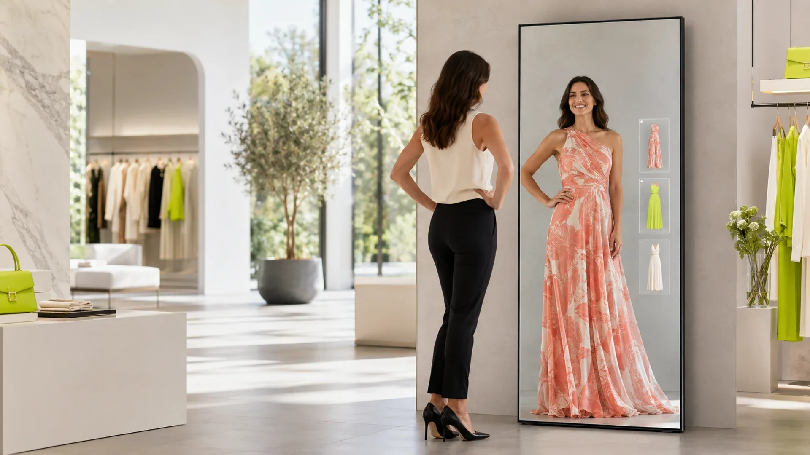
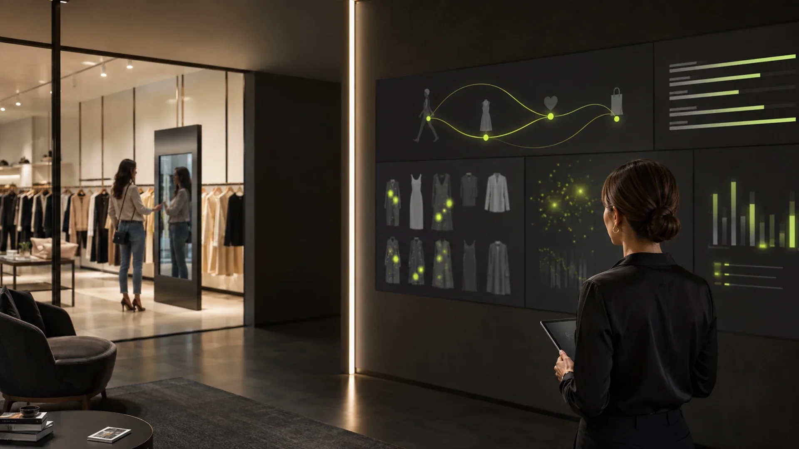
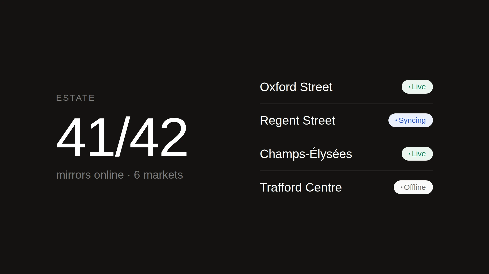
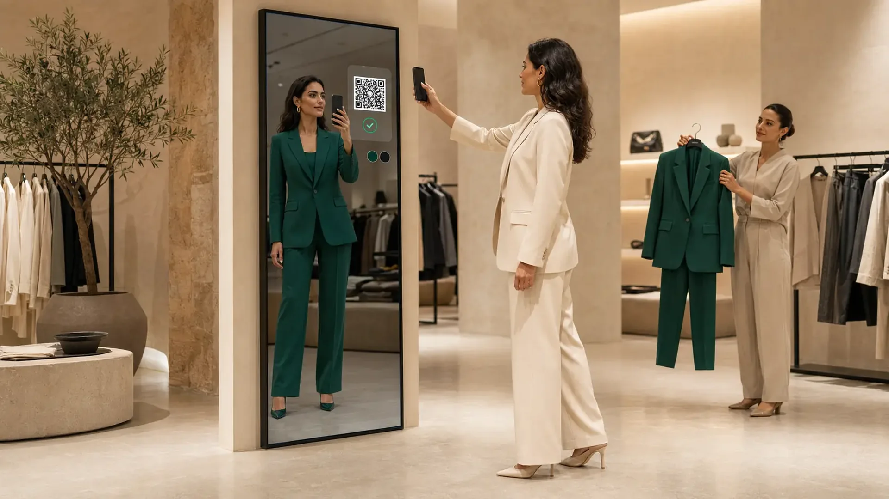
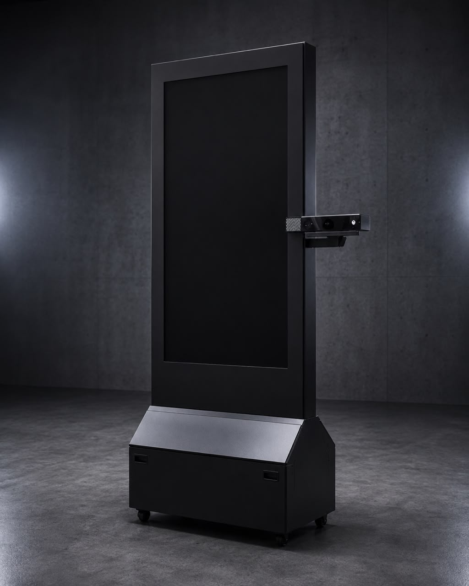
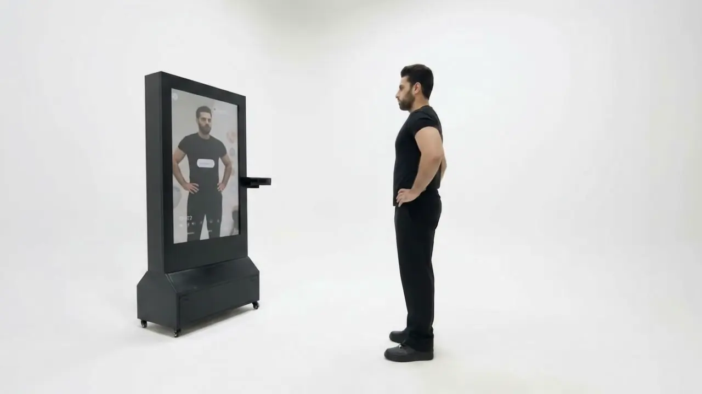
- ASubject. Customer + Mirror; the Mirror alone; service around the Mirror; a business surface. Never garments without the Mirror; never abstract technology.
- BEnvironment. Bright contemporary stores, white/pale-beige walls, window daylight, sparse rails, plants, pale floors, generous negative space. Seamless white or black studios.
- CThe person. One adult, unposed, looking at the Mirror, not at camera. Staff in plain dark clothing, doing something.
- DInteraction. Not a touch device. Approximately 1.5–2 metres from the Mirror, at a comfortable hands-free viewing distance, standing comfortably and observing; hands away from the glass, a raised hand at chest or shoulder height; the phone only for the QR scan. Never tapping, swiping, leaning in, or gesturing theatrically.
- EProduct protection. 49-inch portrait display in a matte-black frame with square architectural corners and real depth; substantial black cabinet with a pronounced sloped upper face and four casters (whether that face is a separate material or colour is not yet defined); a Microsoft Kinect v2 on a bracket at the viewer-right edge at mid-display height. No logo, no cables, no controls on the frame. See the annotated diagram below.
- E2The screen. Not a reflection — a live try-on. Physical outfit ≠ virtual outfit, always: the customer wears one real outfit and the screen shows the same customer in a visibly different one — a different garment type and/or a clearly different colour, a colourway comparison included — with 2–4 thumbnails at an edge and the selected one matching the render.
- FComposition. 16:9 masters cropped by the layout; Mirror at a third, customer opposite; space between kept open; both within the central 55% so a 4:5 crop holds.
- GCamera. 35–50mm, chest height, level, slight three-quarter to the Mirror, moderate depth of field.
- HLight. Soft daylight; the screen's glow is the second light. Product: one soft key in a black studio.
- IColour. Neutral, bright, low-contrast grade; whites white, blacks black; colour from garments. The lime-green props are photographic, not brand.
- JRealism. Photographic throughout; plausible renders; no CGI gloss, holograms, floating UI, particles or beams.
Build every prompt in this order: subject → environment → [product] → [screen] → [interaction] → composition → camera → light → grade → realism → [negative]. The four bracketed clauses are fixed text, defined once in §19 — paste them verbatim. They are the parts models get wrong, and the screen clause is the one that decides whether the picture shows a try-on mirror or an ordinary one.
- [product]The canonical hardware of rule E — 49-inch portrait display, matte-black frame with square corners and real depth, substantial cabinet with a pronounced sloped upper face, handle slots, four casters, Kinect v2 on a short bracket at the viewer-right edge at mid-display height; no logo, cables or touch controls.
- [screen]The try-on of rule E2 — physical outfit ≠ virtual outfit, obviously; 2–4 thumbnails at one edge, one selected, and that one is the rendered garment.
- [interaction]The distance of rule D — approximately 1.5–2 metres, hands-free, never touching or leaning.
- [negative]Everything the image must not do to the hardware, the interface or the scene.
The verbatim text of all four clauses lives once, in §19 — the paragraphs headed THE PRODUCT, THE SCREEN, INTERACTION and NEVER of the image block. Copy from there.
Seven worked prompts — customer discovery, full look, made-to-order, campaign, retail staff, product hero, operations — are in design.md §07K, with the full image and video blocks in §19.
The on-screen outfit matching the customer's physical outfit — the one failure that destroys the picture. Then: stock “happy shopper”; eyes to camera; touching, tapping or swiping the screen; wall-mounted, landscape, curved, bezel-branded Mirrors or ones slimmed into a television on a stand; the base removed or its casters missing; the Kinect moved on top, left, inside the bezel, or turned into a webcam; a showroom row of Mirrors; holograms, HUDs and dashboard UI; futuristic sets; scrims, gradients or translucent overlays on photographs, and text on a photograph that fails §04's conditions; garments without the Mirror; CGI renders; heavy grades; children.
Measured from vagora-mirror-dark.jpeg, the production photograph — the visual source of truth for every generated image. Do not redesign or stylise the hardware.
The Vagora screen is not a mirror reflection. Vagora performs live 3D virtual try-on, and that has to be visible in the picture: the customer wears one outfit, the screen shows the same customer in another.
| Real customer | On screen |
|---|---|
| White top and black trousers | The same customer in a yellow dress |
| A neutral suit | The same customer in a blue coat |
The UI carries one story — several options available → one selected → the selected garment rendered on the customer. Two to four thumbnails near one edge, exactly one outlined, and the outlined one is what the body is wearing. Nothing more: no dashboard, no HUD, no giant buttons, no app-style chrome.
Physical outfit ≠ virtual outfit — here in both type and colour, the strongest form of the difference — and the selected thumbnail is the garment on the body. The picture explains itself.
If the on-screen figure wears what the customer is wearing, the screen reads as an ordinary mirror and the product's whole proposition disappears.
A recognisable Kinect v2 on a short bracket projecting from the viewer-right edge of the frame, at about half the display's height.
Never on top of the display, never centred above the screen, never inside the bezel, never on the left, never restyled as a generic webcam.
Shown whole.
Nothing drawn on it.
The Mirror is presented as an object of fashion retail — like a fitting-room mirror — never as a device. Specifications live in the rail beneath it, not on the image. The screen is never a reflection: it shows the customer in a garment they are not wearing. The console is one coherent technical object with its sample data labelled.
An interactive mirror that starts by itself.
Freestanding on the shop floor, the Vagora Mirror starts when someone steps in front of it. Nothing to tap, nothing to learn.
- 01
Camera active only during a session. Nothing is stored.
- 02
No account, no registration, no face database.
- 03
Live stock is checked before every item is shown.
- 04
49-inch portrait display, readable from a natural standing distance.
- The two outfits differ. Physical outfit ≠ virtual outfit: the screen shows the same customer in a visibly different outfit — a different garment type and/or a clearly different colour; a colourway comparison counts if the difference is unmistakable. If they match, the image has failed; check this first.
- 2–4 thumbnails near one edge, exactly one selected, and the selected one is the garment rendered on the body.
- Portrait display, 49-inch class, tall and narrow (screen close to 9:16).
- Matte-black frame, square architectural corners, real depth — never rounded, never a thin TV on a stand, never wall-mounted.
- Substantial black cabinet with a pronounced sloped upper face and recessed handle slots; four caster wheels visible. Whether that face is a separate material or colour is not yet defined — do not add a pale panel.
- A recognisable Kinect v2 on a bracket at the viewer-right edge at mid-display height — not on top, not left, not inside the bezel, not a webcam.
- No logo, no exposed cables, no buttons or touch controls on the frame; no second camera.
- No touch; the customer stands approximately 1.5–2 metres from the Mirror at a comfortable hands-free viewing distance, hands away from the glass, not leaning in.
- No peripherals: tablet, keyboard, card reader, speaker grille.
- Taller than the customer; roughly a person's shoulder width plus margin, cabinet wider and deeper than the column.
- Ground is black studio or the real store floor; never a gradient or reflective stage.
- One Mirror per marketing image; the estate is shown on the console.
“the Vagora Mirror” · “the mirror” · “every mirror”. Never unit, kiosk, terminal, station, device, screen (as the noun), smart mirror, magic mirror, digital signage.
- Store 1Live
- Store 2Syncing
- Store 3Offline
Sample data, not a live estate.
White surface, 1px hairline border, no shadow, no browser chrome. Bar → two metrics → store list → note beneath. Everything the console knows stays inside the object. Calm: few numbers, nothing animates but the sync dot. No charts, maps, badges, avatars or “AI insight” panels.
Functional punctuation,
not illustration.
The Vagora icon family is Phosphor, and it is what the website ships. Two weights, chosen by the typeface an icon sits beside: Regular with Switzer, Light with Fragment Mono. Icons mark controls, directions, actions and states — they never explain a capability. That work belongs to photography, typography, notation, numbering and composition.
Human and editorial
What Vagora says to a person, and what a person can act on.
Written technical notation
The system naming, indexing and recording.
Functional visual notation
The same technical register as Fragment Mono, drawn instead of written.
Two weights exist for one reason: Switzer and Fragment Mono do not carry the same visual mass, so an icon that balances beside one is wrong beside the other. Judge by the typeface first and the size second.
Why Regular. Switzer has more visual mass than Mono. Regular balances beside it and reads as part of the same control — a lighter weight here looks like a different object placed next to the button rather than a piece of it.
Where. CTA buttons · navigation · interactive controls · compact actions · links with icons · UI controls.
Why Light. Light matches Fragment Mono's quieter, more technical voice. Regular beside Mono reads as a UI control that has wandered into a caption — louder than the notation it is annotating.
Where. System annotations · metadata-adjacent iconography · technical references · restrained standalone functional symbols · anywhere the icon should feel closer to notation than to UI.
Do not derive weight from size. A 16px icon in a button is Regular; a 24px icon in a technical annotation is Light. Size still matters optically and is judged second. Where a specific glyph is unusually dense or unusually weak, the weight may be changed for that symbol after visual review — per symbol, per context, never as a default or a global override.
The one fixed size-and-weight pairing in the system, and it agrees with what production already computes: .btn svg is 1.1em, which on .btn--lg (body tier, up to 22px) resolves to ≈24px. Below this case there is no table — test optically against Switzer and the surrounding UI.
A small working set, not a catalogue. Add a symbol only when a real control needs one. The first five — arrow-up-right, play, pause, copy, check — are in production; the rest are recommended. Shown in Regular; each has a Light counterpart for notation contexts.
A control, a state, a direction. Every icon has a label, every icon is doing a job, and each one takes its weight from the type beside it.
Icon cards standing in for photography, a symbol invented for each capability, a sparkle for "AI". This is the generic SaaS feature grid, and Phosphor will not save it. The right answer is a photograph of the Mirror doing the thing, a number, and a sentence.
The system should feel precise, quiet, refined, technical, contemporary, low-ego, functional.
It should never feel friendly or cute, illustrative, bubbly, heavy, futuristic, sci-fi, decorative or gamified. An icon that would look at home in an onboarding illustration is wrong here even when it is the right symbol.
Approved: Regular, Light. Not used by default: Thin, Bold, Fill, Duotone. Another style is admissible only where a genuine interaction or state requires it and the result still belongs to the system — a considered exception, not a palette.
Phosphor ships filled outline paths (fill="currentColor") on a 256 × 256 grid, with the weight baked into the geometry and round terminals drawn as arcs — unlike a stroked icon set, where the weight is a CSS property. You therefore choose the weight by importing the right asset, which is precisely why weight is an authoring decision made per icon and per context. Stroke equivalents on the 256 grid: Thin 8 · Light 12 · Regular 16 · Bold 24. Licence: MIT © Phosphor Icons.
The website inlines these five as SVG symbols in index.html — Phosphor Regular on the 256 grid, fill="currentColor" — for the primary button, the address copy control and the hero film toggle. Each sits beside Switzer, so each is Regular: the weight rule, applied. No other icon family is loaded, referenced or attributed anywhere on the site.
Whether a filled style is ever admitted for a selected state; whether 20px earns a fixed context of its own.
One event per chapter.
The rest is quiet.
Motion is a fix, an arrival, or an answer to where the reader is — never decoration, and it never makes the reader wait. The frame is established before its content moves. Every heading arrives one way, and a chapter chooses when to ask for it. The takeover is the signature transition, used selectively for a change of world; quiet document-flow handoffs are just as valid, and the vocabulary below is the default a new surface starts from, not the limit of what it may earn.
What happenson the floor.
The quiet grammar beneath it: a 10px rise and a fade over 700ms, once. Siblings follow at 80 / 160 / 240ms.
Hero → Manifesto (white over black) and Act one → Mirror (black over white) use the same three CSS rules. One clean plane; no mask, no wipe; reversible; page height unchanged.
The Mirror resolves at its own size, like light finding an object — not a card arriving.
Below the sticky breakpoint each image opens from its own centre as it enters — a camera opening, not a card fading in. On wide layouts the plane is revealed bottom-up, scrubbed.
| Pattern | What it is | Where · values |
|---|---|---|
| Pinned section transition | Outgoing world held by position: sticky; incoming world pulled up by an equal negative margin and painted above it. One full-width plane. | Hero → Manifesto (scope 200svh); Act one → Mirror (anchor = 100svh − act height, hold 100svh) |
| Pinned reveal | The held world answers minimally while covered: scale 1 → 1.025, brightness → 0.88, scrubbed. | Hero, wide only |
| Scroll-driven proposition | Words light 18% → 100% as the reader scrolls; then the block yields upward and recedes to 45%. | Manifesto · top 45% → bottom 30% |
| Sticky media stage | One plane fixed at viewport centre; state changes when a block's top crosses 72%; 300ms crossfade (or a refraction wave); annotation out 200ms, in 300ms after 260ms. | Both acts, ≥1100×600 |
| Directional media reveal | Plane revealed bottom-up as the stage enters (top 90% → 45%, scrubbed); narrow images open from centre; handoff opens inset(0 10%) with 8% parallax. | Stage entry · every narrow image · handoff |
| Masked text reveal | Words rise from below a per-line mask. Characters for the preloader; a 34% masked rise for the wordmark. | Every heading · preloader · footer |
| Exposure | Scale 1.045 → 1 with opacity, 0.85s, no travel. | The Mirror product |
| Plane arrival | rotateX 7° → 0, y 46 → 0, scale .975 → 1, scrubbed top 92% → 42%. | The console |
| Pointer depth | Fine pointers only, additive, bounded: ±8px product; ±3° / 2.4° console; 0.3× magnetic button; 12px difference cursor. | Mirror · console · ask |
| Preloader | Black curtain; the mark; “Beyond the Mirror” rising by character; the panel lifts out in 0.78s and scrolling is handed back the instant the black clears. | Once per load |
180 / 320 / 700ms on cubic-bezier(.22, 1, .36, 1); arrivals expo.out; scrub none with 0.5–0.7 lag. GSAP 3 + ScrollTrigger; Lenis (lerp 0.09) as the sole smooth-scroll engine; wide behaviour inside matchMedia("(min-width:1100px) and (min-height:600px)"). Reduced motion removes, never shortens: no Lenis, no curtain, no scrub, no split, final states on first paint. The preloader owns the first frame: an inline <head> script marks the document booting so CSS paints the black before the module arrives, intro() drops it in the same frame the curtain lands, and a 4s failsafe clears it if the module never does; the tagline stays visibility: hidden until it has been measured and masked. svh everywhere; page height never changed by motion; transforms, opacity and clip-path only; DPR capped at 1.75.
What the production motion is not — a strong default against repeating it, not a permanent prohibition for surfaces with different needs: expanding rectangles or masks growing from a media plane · block wipes · empty black interstitial holds · irregular geometry, blobs, iris or circular reveals · shader transitions between chapters · morphing · parallax on everything · fade-up-everywhere · letter physics · scroll that traps or invents length · motion that delays the CTA or the dock · anything running continuously off-screen.
Few parts,
used exactly.
Every component on this page exists on the site at these values. The site deliberately has no header bar, cards, testimonials, logo wall, accordion, carousel, modal, cookie banner, chat widget or form. Absence is a decision.
Made-to-order, before the first cut.
Unstitched cloth and made-to-order garments can be rendered on the customer before production begins.
Orders are taken against something the customer has already seen, so cloth is cut to demand rather than forecast.
Index → 12 → title (body size, 500, lh 1.25, −.01em) → 16 → body (small, full ink) → 32/48 → RETAIL IMPACT label → 8 → statement. 34ch; 280–320px on wide layouts, centred in the whitespace, text left-aligned. No icon, no link, no grey body.
What it returns
to the business.
Vagora turns customer interaction into action at the counter, insight for the next buying decision, and one connected system across every store.
Pill, ink on white — white with ink text on dark surfaces — small tier at 500; the trailing glyph is 1.1em, which resolves to ≈24px on the large button: Phosphor Regular arrow-up-right, as in production (§09). Hover 86% and the arrow moves 2px up-right; active .97. Large: body tier. One button per composition; labels ≤3 words. No outline, ghost or gradient buttons. The link is the only underlined text.
Fixed bottom-centre; 88% ink, 20px backdrop blur, float shadow; 4px padding; links 48–52px at 15–16px / 500; the mark 17×33 tilts on hover; scrollspy lights the section covering the 35–65% band. Dark on every surface. Do not restyle, invert, add items or move it.
- 04
How do we know whether it worked?
Sessions, try-ons per session, scans to phone and scans to counter, by store and by garment, in the console from the first day. We have no benchmark to compare you against yet, and will not invent one.
See it in
your store.
Write to us
One line about your estate and your catalogue system is enough to get a useful reply.
An observation,
then its consequence.
Headlines state what happens with the product as the cause. Bodies explain the mechanism in the order it occurs. RETAIL IMPACT states the operational consequence with a contrast built in. British English, retail words, no adjectives doing the work, and no invented numbers.
- 01The garment, rendered on the customer in live 3D.
- 02Every size and colourway, on screen.
- 03The whole look, before anything is fetched.
- 04Made-to-order, before the first cut.
- 05The campaign, with the customer in it.
- 06Their picks, already at the till.
- 07See what customers actually tried on.
- 08Run every mirror from one console.
- 09An interactive mirror that starts by itself.
- 10You find out before the store does.
“It tracks the customer's movement in real time, so the garment responds as they move.” · “One scan sends the customer's selected garments, colourways and sizes to their phone and the counter.” One or two sentences; concrete nouns; so and before are the connectives; no benefit sentence follows — RETAIL IMPACT does that job.
“Staff fetch a piece the customer has already seen on themselves, rather than asking them to imagine it.” · “The buying decision is no longer limited to what physically fits on the rail.” · “Demand becomes visible before purchase, not only after it.” · “The second store becomes a rollout date, not a second project.” Operational, never emotional, never numeric.
till · counter · catalogue · colourway · size · garment · piece · look · outfit · cloth · made-to-order · first cut · rail · floor · shop floor · store · estate · stock · live stock · product feed · buying decision · rollout · session · try-on · scan · customer · retailer · staff · colleague. “Customer” not user or shopper; “retailer” not client; “staff” not associate; “the Mirror” not the device.
AI-powered · next-generation · cutting-edge · revolutionary · seamless · frictionless · immersive · phygital · omnichannel · engagement · delight · elevate · unlock · empower · transform · reimagine · the future of retail · smart mirror · magic mirror · platform · ecosystem · end-to-end · turnkey · leverage · drive sales · boost conversion · game-changing · innovative · personalised journey · data-driven · actionable · real-time analytics · 360° · hyper- · -as-a-service. No invented numbers, customers, partners or benchmarks.
Heading 4–9 words on two lines with a full stop. One lede of one sentence. Body of one or two. Long sentences only when they list in sequence. Numerals inside notation (49-inch, 41 / 42); words in prose (Five things, One store first).
| Editorial (Switzer) | Write to us. · Skip to content. · Pause the film. · One line about your estate and your catalogue system is enough to get a useful reply. |
| Notation (Fragment Mono) | ESTATE OVERVIEW · ILLUSTRATIVE · SAMPLE DATA, NOT A LIVE ESTATE. · RETAIL IMPACT · (01) · ACT ONE · ON THE FLOOR |
One atom,
repeated or scaled.
Every Vagora piece has the same skeleton: notation label → statement → explanation → consequence → (optional) object. The feature block is the atom.
| Format | Structure | Copy amount |
|---|---|---|
| Website section | Eyebrow → two-line title → lede → one dominant object → one annotation or rail. One motion event at most. | Title ≤9 · lede ≤25 · body ≤40 · impact ≤25 words |
| Product feature | (index) → title → body → RETAIL IMPACT, beside one photograph of that feature on the Mirror. Never an icon. | As the annotation block |
| Social post | One photograph or the product, full-bleed, no overlay; caption in the editorial voice; notation only as a tiny margin label. | ≤3 sentences; no hashtag walls, no emoji |
| Case study New | Eyebrow “Case · Retailer, City” → observation title → lede with the term and the written measure → in-store photograph → numbered facts as a rail → RETAIL IMPACT lines. Numbers only with written agreement. | One page |
| Slide deck | One idea and one object per slide; mono eyebrow top-left; title at chapter/section tier; black for the product and the ask. | ≤1 paragraph per slide |
| Product sheet | Product in its black field on one side; specification rail on the other; privacy / stock / display facts first. | Facts, not adjectives |
| Event material | The photograph or the product at the largest size; a two-line observation; the mark. The Mirror on the stand is the demo. | Two lines |
Find the retail noun.
Cut the adjective.
Transformation rule: find the noun the sentence is about (garment, till, catalogue, stock, store), say what the Mirror does to it in the present tense, cut every adjective, then check whether the consequence belongs in a RETAIL IMPACT line instead.
| AI-powered virtual try-on that transforms the customer journey. | The garment, rendered on the customer in live 3D. |
| Seamless omnichannel engagement from floor to checkout. | Their picks, already at the till. |
| Boost conversion by up to 30%. | Demand becomes visible before purchase, not only after it. |
| Our smart mirror uses advanced sensors to detect shoppers. | An interactive mirror that starts by itself. |
| Unlock powerful real-time analytics. | See what customers actually tried on. |
| Trusted by leading retailers. | We have no benchmark to compare you against yet, and will not invent one. |
| Elevate your store experience today! | See it in your store. |
| Users can interact with the device via gesture control. | Nothing to tap, nothing to learn. |
| Scalable fleet management platform. | Run every mirror from one console. |
| Contact our sales team for pricing. | We quote per estate. Ask and we will put a number in writing. |
Translating Vagora,
not templating it.
How the system already defined translates when the medium changes. None of these is a template: each shows what stays constant and what the medium forces to move. A future piece may resemble none of them and still be Vagora, because it keeps one dominant object, strong scale contrast, deliberate whitespace, Switzer speaking, Fragment Mono annotating, Phosphor only on controls, black and white, an accurate Mirror, concrete copy and purposeful motion. New recommendation
One dominant object · strong scale contrast · deliberate whitespace · three voices that never swap roles · black, white and their alphas · realistic imagery and an accurate Mirror · restrained, concrete copy · purposeful motion. When uncertain, reduce rather than decorate. That rule outranks every example below.
The site's sections are precedents, not moulds. A new section decides its one object and which edge it runs to, then builds from the same parts — eyebrow, title, lede, annotation block, one photograph, one motion event — in whatever arrangement its content needs. It does not have to reproduce the sticky stage.
Made-to-order,
before the first cut.
Unstitched cloth and made-to-order garments can be rendered on the customer before production begins.
Orders are taken against something the customer has already seen, so cloth is cut to demand rather than forecast.
What remains Vagora. Editorial asymmetry, one photograph to a viewport edge at ≈60%, the eyebrow → title → lede opening, the annotation block with RETAIL IMPACT, full ink for the block, secondary for the lede. Every part is from the site.
What changes for this medium. A single feature has one image, so there is no sticky stage and no rail — the plane is in flow and the section's one motion event is the directional media reveal. Same parts as the acts, a different arrangement, because the content is different. A new section translates the principles; it does not reproduce the component.
A small frame seen for a second in a feed. The scale contrast gets more extreme, the copy gets shorter, whitespace on a type frame rises to a third or more, and one Mono index does the eyebrow's job because a post belongs to no page. The logo is the vertical lockup — social is ordinary marketing, so the primary logo applies (§01) — in a margin, once per post or carousel, given room to be read. Five modes and no others, A–E below. Type sits directly on a photograph only under §04's four conditions — genuine negative space, dependable contrast, nothing that matters covered, integrated with the composition (A); otherwise it goes in a solid field (B) or on a compact solid plate (C).
Every size and colourway, on screen.
What remains Vagora. The photograph is the frame; Switzer states the observation in its own negative space — the white wall the picture already has — with no plate, no scrim; one Mono index; the mark small.
What changes for this medium. The eyebrow's job is done by one index because a post belongs to no page. The statement is larger relative to the frame than on the web and there is no lede; the lede is the caption.
The campaign,
with the customer in it.
What remains Vagora. One dominant photograph, uncropped from its central region, obeying §07 — the customer in black, the screen showing her in yellow. The statement is secondary and sits in a solid white field, not on the picture.
What changes for this medium. The solid margin is the social equivalent of the site's white surface beside an image: it exists because a feed frame has no gutter of its own. Zero radius, no blur, the field meets the photograph on a hard edge.
The whole look, before anything is fetched.
Customers combine pieces on themselves to see how the complete outfit comes together.
What remains Vagora. The manifesto's grammar at feed scale: a pure surface, one Switzer statement top-left with an authored break, one line of Mono, one small supporting line, the mark. A third of the frame is empty.
What changes for this medium. Black instead of white here because the post has no chapter context to inherit — a type-led post chooses its surface for contrast in the feed, and either surface is correct. Nothing else changes.
Made-to-order, before the first cut.
Unstitched cloth rendered on the customer before production begins.
What remains Vagora. A large photograph and one small, precise explanation — the annotation block's grammar. Index in Mono, title at feature tier, one line of body, full ink.
What changes for this medium. Where the copy cannot sit in negative space it sits on a plate: solid white or black, compact, zero radius, no blur, no translucency, no gradient, no shadow, attached to an edge or an axis like a caption and sized to its content. It reads as an editor's note on a photograph, not as a card.
- Glassmorphism, or any translucent panel.
- Backdrop blur behind content of any kind.
- Scrims, smoked overlays or gradients darkening part of the picture so text can sit on it.
- Rounded floating cards, hairline glows, shadows under a plate.
- Type over the customer, the garment, the Mirror, its screen or its UI, or staff.
- Type on a photograph that has no genuine negative space or no dependable contrast — use a solid field (B) or a solid plate (C) instead.
Blur exists in exactly two places on the site — the dock and the film toggle — and both are locked controls, never content or annotation surfaces.
What it returns to the business.
Their picks, already at the till.
The customer reaches the till without having to repeat what they want.
See it in your store.
hi@vagoramirror.com
What remains Vagora. One Mono index runs through every frame; the photograph leads; the annotation plate and the type frame are the site's own two ways of explaining; the closing frame is the ask — black, display tier, centred, the one centred composition, as on the site.
What changes for this medium. A carousel needs a beat, so the internal frames alternate between two systems — image with annotation, then type on a surface — rather than repeating one layout. The reader feels the rhythm without seeing a template. No arrows unless the platform hides its own.
An interactive mirror that starts by itself.
What remains Vagora. The first frame is a complete still that obeys the image-led rules above; motion begins after it and starts from the site's vocabulary — the masked line rise for the statement, the 300ms crossfade between shots, the exposure for the product. Cuts, not wipes.
What changes for this medium. Time is the new dimension, and the discipline is to not use it for decoration. A six-second post that is one photograph and one line rising is Vagora; the same post with the line bouncing in, a zoom on the still, or a transition the site does not have is not. Sound is optional; the film works silent.
One idea per slide. The headline carries the argument and everything else proves it. Type is larger than on the web and there is less of it; whitespace is more than feels comfortable. No template chrome, no card grids, no decorative icons, no charts for their own sake, no website sections pasted onto slides.
What remains Vagora. Black surface, the vertical lockup — the primary logo (§01) — low and left, one Mono line for the occasion, a Mono slide number. Nothing else on the slide.
What changes for this medium. A deck has a title composition and the website does not, so the primary lockup finally appears — the site never needed it. A deck may spend one wordmark moment instead, on the title or the close but not both; the lockup takes the other.
Demand becomes visible before purchase, not only after it.
See what customers browsed, tried, combined, saved and ignored, by store and garment — in the console from the first day.
What remains Vagora. Eyebrow top-left, the headline at section tier as the argument itself — observation → consequence, in the site's own words — one short body, one photograph to the right edge at ≈52%, a hairline footer with the slide number.
What changes for this medium. One idea per slide. The headline is the point; if the audience read only headlines the deck should still make sense. Type is larger than on the web because the room is further away, and there is less of it.
You find out before the store does.
Every mirror in every store on one screen, with its catalogue, session activity and last sync status.
| Estate overview | Today |
|---|---|
| Sessions today | 1,284 +12.4% |
| Mirrors online | 41 / 42 Mirror 12 offline |
| Store 1 | Live |
| Store 2 | Syncing |
| Store 3 | Offline |
What remains Vagora. One object of evidence beneath the argument: a hairline table with Mono headers and tabular Switzer figures, and the same sample-data disclosure the site prints under its console. The figures are the site's own sample values.
What changes for this medium. Print and screen data slides can carry a table where a social frame never could — but one table, ≤6 rows, no chart for its own sake, no dashboard, no status colour outside a console object.
Read, not scrolled. Print holds denser information than social and a clearer hierarchy than a slide — a full specification, several RETAIL IMPACT lines — inside physical margins. It can hold more; that is not a reason to fill it.
An interactive mirror that starts by itself.
Freestanding on the shop floor, the Vagora Mirror starts when someone steps in front of it. Nothing to tap, nothing to learn.
Camera active only during a session. Nothing is stored.
No account, no registration, no face database.
Live stock is checked before every item is shown.
49-inch portrait display, readable from a natural standing distance.
What remains Vagora. A spread is one composition across the gutter: the product on its black page, shown whole and accurate, never cut out onto white; the reading on the white page — eyebrow, section-tier title, lede, the specification rail as a hairline table with index above fact, Mono folios and contact.
What changes for this medium. Print is read at a fixed distance for longer, so it holds denser information than a post and a clearer hierarchy than a slide — a full rail on one page. Margins are physical, ≥8% and more at the gutter, and the whitespace rules do not relax because the page could hold more.
Distance and seconds. Vagora reduces until it is one image or one short statement plus the minimum of identity and notation. Everything that needs to be read up close leaves.
An interactive mirror
that starts by itself.
What remains Vagora. The vertical lockup, once, found rather than leading. A black surface, one Switzer statement at display tier with an authored break, the mark, one line of Mono. Two thirds of the surface is empty.
What changes for this medium. Reduce. At distance Vagora becomes one statement or one image — never both at equal size. Body copy, annotations, technical facts and icons cannot survive the viewing distance and leave. A website section is a page of reading; this is a glance.
Nothing to tap, nothing to learn.
What remains Vagora. Black; the product photograph at full height — the accurate Mirror, sloped cabinet and Kinect included; one chapter-tier line; a Mono eyebrow. The exposure and one line rising, once per loop, then still.
What changes for this medium. This screen stands beside a real Mirror, so it must not compete: no loop that moves continuously, no film of a customer while a real one is there. On a booth wall the same rule goes further — the wordmark alone, or one photograph across the wall, and the Mirror in front of it is the exhibit.
One dominant concept, carried by the photograph or the product. Every format is a crop of the key visual. No gradients, no glass, no accent colour, no second headline, no feature icons.
The campaign, with the customer in it.
What remains Vagora. One photograph is the concept — the customer standing in black, the screen showing her in the yellow dress, the two outfits unmissable. One Switzer observation in the picture's negative space, one Mono line, the mark. Nothing sells; the photograph makes the case.
What changes for this medium. A campaign repeats one idea across formats, so the constant is the concept and the variable is the crop: every ad, banner and post is cut from this master. And because an ad is measured, the temptation to add — an offer, a badge, an accent — is strongest here. The system holds.
Time is the new dimension and the hero film is the reference: locked-off, the Mirror at a third, the customer walking in and stopping at a hands-free distance, straight cuts on one axis. A film can show the try-on happening — the customer stopping, the garment on the screen changing — which no still can, so the camera and the cut do the work and type stays out of the way.
Campaign video — five or six held shots and one statement on its own surface. Social video — one shot, one line, a complete first frame. Event loop — motion once per loop, then a long still, never competing with a real Mirror. Product demonstration — the real experience in order, captions on a black band in the site's own words, the customer never touching the screen. Presentation motion — the heading rise on entry, a cut to the next slide.
Every frame obeys §07 and §08: the two outfits visibly different, the Kinect at viewer-right mid-height, no touch. Image-to-video work uses the lock block in §19 — hardware and UI locked, only human movement animated.
Never assume a film needs rapid cuts, kinetic typography, glitch, shaders, light leaks, futuristic overlays, a persistent logo bug, or text over the action. Start from §10's vocabulary — the masked line rise, the crossfade, the exposure, the cut — and earn anything beyond it. A title card holds at least two seconds.
Dominant object,
small object, one rule.
Each recipe names its dominant object, its small object, and the rule that places them. The first four are lifted from the site; the rest are derived for other formats.
Image-dominant. Photograph to one edge at ≥60%; annotation centred in the remaining whitespace, text left-aligned, ≤320px. Mirror the side when repeated.
Type-dominant. One lead-tier proposition at 24ch, top-left anchored with the eyebrow a gutter from the edge; three hairline facts beneath; nothing else.
Product chapter. Black. Product 4:5 left of centre at ≈80% height, masked into the surface; eyebrow, 21ch heading, 40ch lede right from the upper third; rail beneath.
Technical system. White. Intro column at a fixed measure; one hairline-bordered object filling the rest; a mono disclosure beneath it.
Social / campaign. One uncropped photograph. If a second frame is needed: a two-line title at chapter tier, left-aligned in the upper third, a mono index in the lower margin.
Presentation cover. Black. The vertical lockup low and left — or, as the deck's one display moment, the wordmark at ≥60% width in its place; a mono line top-left with the occasion.
Presentation content. White. Mono eyebrow top-left; section-tier title in the upper third; one object on the right 55–60%; ≤40 words; hairline above a footer row with the slide number.
The ask. Black, full height, centred: eyebrow, display title at 10ch, one button, the address. The only centred recipe.
Square, flat,
asymmetric, quiet.
The site's rejections are as much of the system as its rules.
| Near-black page backgrounds (#111, #0F0F0F) | Pure #000000 surfaces; #0F0F0F for ink only |
| Off-white or warm grounds; gradients as surfaces | #FFFFFF |
| Cards with radius and shadow | Hairlines, whitespace and proximity |
| Rounded image corners; text over a photograph's subject, or on a scrim, blur or glass panel | Square media; type in the picture's own negative space (§04 conditions), or beside/beneath it in a solid field, or on a solid zero-radius plate at an edge |
| Glows, blurs and gradients as decoration | Flat surfaces; blur only in the two locked controls, the dock and the film toggle |
| Feature icons in a grid; a symbol invented per capability | Numbered feature blocks with photographs; icons only on controls |
| Bold headings; Mono headings or buttons | 500 on white, 450 on black; Mono for eyebrows, indexes, labels, metadata only |
| Three greys to build hierarchy | Full ink for the block; secondary for ledes and facts; notation for mono |
| Centred layouts by default; many medium elements | Left-aligned and asymmetric; one dominant object + one small object; centred only for the ask |
| A header bar with a logo and menu | The dock, unchanged |
| Multiple Mirrors in a showroom row; the Mirror cut out onto white | One Mirror in its black field; the estate as data on the console |
| Status colours as accents; the photographic lime-green in UI | Status colours inside the console's pills only; colour from garments in photographs |
| Motion on everything; masks, blobs, wipes, shaders between chapters | One event per chapter; the takeover plane or a quiet document-flow handoff |
When uncertain,
reduce.
Seventeen steps, in order, before producing anything for Vagora. If two options seem equally right, choose the one with fewer elements, fewer words, fewer colours and less motion.
- 01Identify the format and read its entry in §15.
- 02Locate the piece on the spine: floor, Mirror, business, console, commitment, ask.
- 03Check every claim against the §01 capability list. Never add numbers, customers, partners or benchmarks.
- 04Choose the one dominant object and write it down before laying anything out.
- 05Choose the surface: white by default; black for product, ask, covers, event screens.
- 06Choose the small object that answers the dominant one.
- 07Assign voices: what the system names (Mono) and what Vagora says (Switzer).
- 08Write the headline as observation → consequence; two lines; authored break; full stop.
- 09Write the body as what happens, in order, present tense; then one RETAIL IMPACT line if the format allows.
- 10Run the banned-phrase list over every sentence; replace with retail nouns.
- 11Select or generate imagery with §07 — the four clauses verbatim from §19, physical outfit ≠ virtual outfit, hands-free at approximately 1.5–2 m, composition for the crop.
- 12Run the Product Accuracy Checklist on every image of the Mirror.
- 13Lay out with the matching recipe in §16; one left axis; centre the small object in the whitespace, not on the page.
- 14Set type from §04 and spacing from §05; hairlines only where a boundary is real.
- 15Add icons only where a control needs one; label every icon.
- 16Add motion only as one event plus the quiet grammar; provide reduced-motion and no-motion states.
- 17Reduce. Remove one element. If it still works, remove another. Then run §21.
The block,
then a variation.
This chapter is canonical for AI generation — the product, screen, interaction and negative language lives here once, and §07K, §08 and §18 point to it. Paste the image block into the model's system or prompt field and append one variation. For image-to-video, append the lock block below on top of it. New recommendation
You are generating photography for Vagora, an interactive mirror for physical fashion retail. Style: editorial retail photography, photographic realism, daylight, neutral bright grade, generous empty space, one person, unposed, no text, no overlays, no logos, no watermark. THE PRODUCT — describe it exactly like this, every time: a freestanding Vagora Mirror: a 49-inch portrait display in a matte-black rectangular frame with square architectural corners and real depth, rising from a substantial black lower cabinet whose upper face is a pronounced sloped wedge running down toward the front, with recessed handle slots on the cabinet front and four small caster wheels underneath so the unit reads as freestanding and movable; a black Microsoft Kinect v2 — a long low horizontal sensor bar with a visible lens cluster — mounted on a short black bracket projecting horizontally outward from the VIEWER-RIGHT edge of the frame at approximately mid-display height, never on top of the unit and never on the left; no logo on the front, no exposed cables, no buttons or touch controls on the frame. THE SCREEN — this is the whole point of the picture: Vagora performs live 3D virtual try-on, so the screen is NOT a mirror reflection. The customer standing in front of the Mirror is wearing one real outfit, and the screen shows that same customer full-length wearing a VISIBLY DIFFERENT outfit they are not physically wearing. The physical outfit and the virtual outfit must never match: make the difference obvious at a glance — a different garment type and/or a clearly different colour. Near one edge of the screen show 2 to 4 small garment or colourway thumbnails with exactly one visibly selected by a restrained outline, and that selected thumbnail is the garment rendered on the customer's body. Keep the interface restrained and realistic. INTERACTION — Vagora is not a touch device: The customer stands approximately 1.5–2 metres from the Vagora Mirror, at a comfortable hands-free viewing distance, standing comfortably and observing their virtual outfit, turning slightly, with subtle natural hand and arm movement. Never touching, tapping or swiping the screen, never leaning toward it, never standing against the glass, never gesturing theatrically. Environment: bright contemporary store, white or pale-beige walls, natural window light, sparse rails, pale floor, plants or simple props; or a seamless white studio; or, for the product alone, a seamless black studio with one soft key light. Camera: 35–50mm, chest height, level horizon, slight three-quarter angle to the Mirror so the frame's depth and the sensor bracket both read, moderate depth of field, the Mirror and the person within the central 55% of the frame. NEVER: change the mirror's proportions; make it a wall mirror, a wall-mounted screen or a thin television on a stand; remove or redesign the base; remove the caster wheels; move the Kinect on top of, above or inside the frame or to the left side; turn the Kinect into a generic webcam; add a second camera, touch buttons, a keyboard, exposed cables or a logo; round the frame corners. No hologram, floating HUD, sci-fi interface, giant buttons, colourful app-style controls or dashboard UI. No multiple mirrors, neon, lens flare, teal-and-orange grade, heavy vignette, CGI gloss, crowd, children, smiling at camera, text of any kind. And never let the on-screen outfit match the customer's physical outfit.
| Customer experience | PHYSICAL: the customer is physically wearing [outfit A — plain, everyday]. SCREEN: the same customer, full-length, in [outfit B — visibly different from A: a different garment type and/or a clearly different colour]; the physical and virtual outfits never match. UI: 2–4 small thumbnails near one screen edge, exactly one selected, and the selected one is outfit B. INTERACTION: standing approximately 1.5–2 metres from the Mirror at a comfortable hands-free viewing distance, one hand raised to shoulder height, turning to see the virtual outfit, never touching the screen. 16:9, crop-safe to 4:5. |
| Product | The Mirror alone in the black studio, whole product including base and casters, screen lit with a full-length garment render, portrait 4:5, true black. |
| Retail staff | A colleague in plain dark clothing [carrying a folded garment to the counter / showing swatches and a sketch] while the customer stands back from the Mirror in [outfit A], the screen showing them in [outfit B]. Shallow focus on the action. |
| Campaign | The screen places the customer inside a built campaign scene ([scene]) wearing [outfit B] while they physically stand there in [outfit A] and the real store stays plain and white; the contrast is the picture. |
| Business / operations | Dark store after hours; a wall screen shows a simple dark estate overview with small green, amber and red pills; one Mirror in the background, screen dark so the hardware alone reads — frame, sloped cabinet, casters, Kinect on its viewer-right bracket; no people. |
When animating a Vagora product photograph, the hardware and the interface are reference, not raw material. Append this to the shot description.
Treat the Vagora Mirror, the Kinect v2 hardware and the screen UI as locked reference elements. Do not redesign, morph, relocate or animate the hardware or the interface: the mirror's proportions, the frame, the base, the caster wheels, the Kinect v2 and its mounting position, the UI layout and the selected garment state must all stay exactly as they are in the source image. Keep the Vagora screen interface and all garment-selection UI visually unchanged throughout the shot. Animate only believable human movement — the customer's posture, a slight turn, small head movement, natural observation — unless otherwise specified. The real person's clothing and the virtually rendered clothing on the screen must remain visibly different for the whole clip.
The customer may walk toward the Mirror, but must stop at a comfortable hands-free interaction distance and never walk right up to the display. No reaching for the screen at the end of the move.
A colourway switching, say. Ask for that one change explicitly and name both states. Otherwise the lock holds and the interface stays still for the whole clip.
Present tense.
Retail nouns.
The reusable instruction block, with three applications. New recommendation
You write for Vagora, an interactive mirror for physical fashion retail. Write in British English, present tense, plain declaratives. Describe what happens, in the order it happens, with the customer, the staff, the stock or the retailer as the subject. Never describe how it feels and never claim a result. Headlines: an observation and its consequence. A noun phrase, a comma, a timing or place. Four to nine words, two lines, full stop. Examples: "Every size and colourway, on screen." "Made-to-order, before the first cut." "Their picks, already at the till." Body: one or two sentences saying what the Mirror or the console does, mechanically. Connect with "so" and "before". Example: "It tracks the customer's movement in real time, so the garment responds as they move." Retail impact (when asked for): one sentence, function → consequence, built on a contrast: "rather than", "no longer", "not only", "becomes … not …". Operational, never emotional, never numeric. Example: "The second store becomes a rollout date, not a second project." Vocabulary: till, counter, catalogue, colourway, size, garment, piece, look, cloth, made-to-order, rail, floor, store, estate, stock, live stock, product feed, buying decision, rollout, session, try-on, scan, customer, retailer, staff, colleague. The product is "the Vagora Mirror" then "the mirror". The software is "the console". Never use: AI-powered, next-generation, cutting-edge, revolutionary, seamless, frictionless, immersive, phygital, omnichannel, engagement, delight, elevate, unlock, empower, transform, reimagine, the future of retail, smart mirror, magic mirror, platform, ecosystem, end-to-end, leverage, boost, drive, game-changing, innovative, personalised journey, data-driven, actionable, real-time analytics, 360°. Never invent a number, a customer, a partner or a benchmark. Where evidence does not exist, say so plainly. Two registers: editorial (full sentences, sentence case, to a person) and notation (uppercase fragments or indexes such as "RETAIL IMPACT", "(01)", "ESTATE OVERVIEW"). Never mix them in one line.
| “Headline and body for made-to-order.” | Made-to-order, before the first cut. · Unstitched cloth and made-to-order garments can be rendered on the customer before production begins. · RETAIL IMPACT: Orders are taken against something the customer has already seen, so cloth is cut to demand rather than forecast. |
| “LinkedIn caption for the catalogue feature.” | Every size and colourway, on screen. The Mirror shows the whole catalogue, and each option is checked against live stock before it appears — so the buying decision is no longer limited to what physically fits on the rail. |
| “A line for a booth banner.” | An interactive mirror that starts by itself. |
A “no” means
it is not finished.
Run before anything is published. The full list, with the format and motion sections, is in design.md §21.
- Exactly one dominant object; one small object answering it.
- Surfaces #FFFFFF or #000000 only; ink for text and controls only.
- No UI colour except the console's status pills.
- Type from the eight tiers; 500 / 450 headings; 400 body; no bold; no Mono above 14px.
- Authored two-line breaks; measures respected; eyebrow gap is the site-wide value.
- Spacing from 8–160; inside-block gaps smaller than between-block gaps.
- Square media; no shadows or borders on images; any type on a photograph meets §04's four conditions, otherwise a solid field or plate; hairlines structural only.
- One left axis; centred only for the ask.
- Icons only on controls, labelled, functional — no feature icons or icon cards.
- Icon weight follows the typographic context: Phosphor Regular beside Switzer, Light beside Fragment Mono.
- Imagery passes §07; every Mirror image passes the accuracy checklist; the console carries its disclosure.
- The real outfit and the on-screen outfit are visibly different, and the selected thumbnail is the garment rendered on the body.
- Kinect v2 at the viewer-right edge at mid-display height; sloped cabinet and four casters present and unaltered.
- The dock is untouched.
- Every claim is on the capability list; no unevidenced numbers, customers, partners or benchmarks.
- Headlines observation → consequence, ≤9 words, full stop; bodies present tense, ≤2 sentences.
- RETAIL IMPACT lines function → consequence with a contrast, non-numeric.
- Retail vocabulary; British spelling; zero banned phrases; registers never mixed.
- Where evidence is missing, the copy says so.
- At most one motion event per chapter; frame established before content moves; headings use the one animation.
- A change of world is the takeover plane or a plain change of surface; reversible; page height unchanged; reduced motion renders final states.
- CTA and navigation usable before any animation completes.
- Checked at the eight QA viewports; no overflow; no clipped glyphs; nothing under the dock at rest.
- Fonts self-hosted with licences; icons attributed; alt text accurate; works without JavaScript.